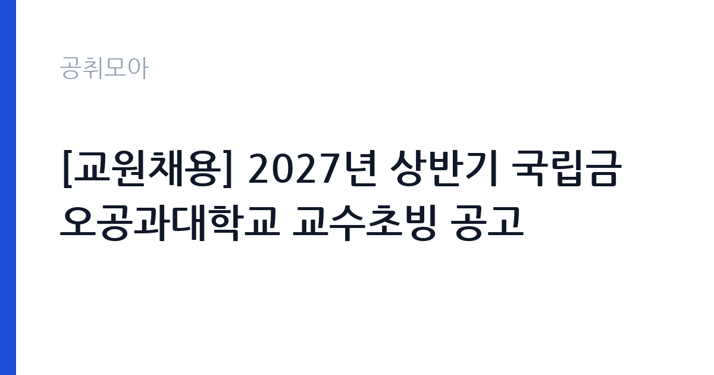

[국가기관] [교원채용] 2027년 상반기 국립금오공과대학교 교수초빙 공고
국립금오공과대학교 · 경북 · 마감 2026-11-13 (D-18) · 출처 나라일터

한눈에 보는 모집 조건
| 기관 | 국립금오공과대학교 |
|---|---|
| 공고명 | [교원채용] 2027년 상반기 국립금오공과대학교 교수초빙 공고 |
| 고용형태 | 기간제 |
| 근무지 | 경북 |
| 게시일 | 2026-10-26 |
| 마감일 | 2026-11-13 (D-18) |
지원자격, 이렇게 읽으세요
- 일반교수 11명
- 접수 ~2026-11-13 마감
- 세부 조건은 원문 공고문 확인
공고문의 응시자격은 짧게 쓰여 있지만 실제로는 세 가지를 봅니다. 첫째 결격사유 해당 여부, 둘째 자격·경력의 직무 연관성, 셋째 근무 시작 가능일입니다. 셋 중 하나라도 애매하면 원문 공고문의 세부 조항을 먼저 확인하고 지원서를 쓰세요. 특히 국립금오공과대학교 공고는 기간제 전형이라 서류에서 직무 연관 키워드(국가기관)를 명시하는 게 유리합니다.
이 공고의 포인트
'' 조건을 눈여겨보세요. 이번 국립금오공과대학교 모집에서 '일반교수 11명' 항목이 사실상 1차 필터 역할을 합니다. 본인이 맞는다면 지원 우선순위를 맨 위로 올리고, 아니라면 비슷한 조건의 관련 공고 3개를 함께 검토해 차선을 마련해 두세요.
전형은 어떻게 진행되나
일반적인 순서는 서류심사 통과 후 면접심사입니다. 서류에서는 직무와 연결되는 경험이 있는지, 면접에서는 그 경험을 직접 설명할 수 있는지를 봅니다. 마감일(2026-11-13) 코앞에 몰리면 원서 접수 자체가 안 될 수 있으니 최소 하루 전에 제출하세요. 제출 뒤에는 접수번호·수험표가 정상 발급됐는지 확인이 필수입니다.
원문에서 확인한 전형 방식
[국립금오공과대학교 공고 제2026-94호] 2027년 상반기 국립금오공과대학교 전임교원(교육공무원) 공개채용을 실시하오니, 책임 있는 교육과 창의적인 연구를 통해 국가와 지역 발전을 선도할 수 있는 우수하고 역량 있는 분들의 많은 지원 바랍니다. 1. 초빙인원: 일반교수 11명 2. 공고기간: 2026. 10. 26.(월) ~ 11. 13.(금) 3. 접수기간: 2026. 11. 2.(월) ~ 11. 13.(금) 17:00까지(한국시각 기준) 4. 접수방법: 본교 교수초빙 홈페이지를 통한 온라인 접수 ※ 접수주소: https://kit.kumoh.ac.kr/recruitment/index.jsp 5. 공고사이트: 본교 홈페이지, 하이브레인넷, 나라일터 6. 서류제출: 온라인 제출(온라인 지원서 작성 및 제출서류 PDF 파일 업로드 후 제출 확정) 7. 초빙분야 및 세부평가기준: 붙임파일 참조 8. 문의처: 국립금오공과대학교 교무처 교수인사팀(054-478-7245) 붙임 1. 2027년 상반기 전임교원 신규채용 공고문 1부. 2. 2027년 상반기 전임교원 채용 분야별 세부평가기준 1부. 3. 2027년 상반기 전임교원 신규채용 추진일정(공고) 1부. 4.
위 내용은 국립금오공과대학교 원문 공고의 전형 항목을 그대로 옮긴 것입니다. 단계별 배수와 평가 요소가 적혀 있으니 본인 강점과 맞는 단계에 맞춰 준비 순서를 정하세요. 전형별 합격자 발표일도 원문에서 함께 확인하는 것이 좋습니다.
이런 분께 추천해요
- 경북 근무가 가능한 분 — 통근·거주 조건이 맞는지가 1순위입니다
- 기간제 전형을 찾는 분 — 국가기관 분야 관심자라면 우선 검토 대상입니다
- 마감(2026-11-13) 안에 서류를 낼 수 있는 분 — D-18이니 오늘 지원서 초안부터 잡으세요
지원 전 체크리스트
- 국립금오공과대학교 원문 공고문 저장했는가(공고 변경 대비)
- 지원서 초안과 증빙 파일이 준비됐는가
- 접수 마감일 2026-11-13(D-18)을 달력에 표시했는가
- 경북 출퇴근·거주 조건이 맞는가
모집 일정과 제출 타이밍
이번 공고의 접수 기간은 2026-10-26부터 2026-11-13까지입니다. 남은 기간은 약 18일입니다. 서류 준비에 17일을 쓰고 마지막 하루는 접수·확인용으로 남겨두세요. 원서 접수는 시작일보다 마감일에 몰리는 구조라, 서버가 느려지는 마감 당일은 피하는 게 상책입니다. 권장 스케줄을 짜보면 첫째 날 공고문 정독과 지원자격 체크, 중간 날 자기소개서 작성과 증빙 준비, 마감 전날 접수 시스템 사전 입력입니다. 특히 국립금오공과대학교 채용은 마감 이후 추가 접수를 받지 않으니, 접수번호와 확인증 출력까지 마쳐야 비로소 지원 완료입니다.
직무 이해하기: 국가기관
국가기관 채용은 법령상 결격사유 심사가 엄격합니다. 병역, 정년, 겸직 금지 조항을 본인 상황에 대입해 먼저 점검하세요. 보안·신원조회가 필요한 직위는 합격 후에도 탈락 사유가 될 수 있어 사전에 결격 여부를 확인하는 것이 시간을 아끼는 길입니다. 국립금오공과대학교의 이번 채용(기간제)도 같은 잣대로 보면 됩니다. 공고 제목에 적힌 분야명과 직무기술서의 필요역량을 나란히 놓고, 본인 경험에서 겹치는 키워드를 세 개 이상 뽑아보세요. 그 세 개가 자기소개서와 면접 답변의 뼈대가 됩니다.
자기소개서 작성 팁
공공기관 자기소개서 심사는 화려한 문장보다 직무 연관 경험의 구체성을 봅니다. 첫 문단에는 지원 분야(국가기관)와의 연결고리를 한 줄로 선언하고, 본론에는 숫자(기간·규모·성과)가 들어간 경험 두 개를 배치하고, 마무리는 입사 후 1년 안에 해낼 일을 적으세요. 국립금오공과대학교 지원서에 흔한 감점 요인은 세 가지입니다. 모집 분야와 무관한 장황한 성장 과정, 증빙 없는 주장(자격·경력), 그리고 마감일 오기재입니다. 특히 기간제 전형은 실무 투입 속도를 보기 때문에 즉시 근무 가능함을 문장으로 명시하면 좋습니다.
면접 준비 포인트
면접은 서류에 쓴 경험의 진위 확인과 조직 적합성 검증이 목적입니다. 자기소개서에 적은 두 가지 경험을 1분 스피치로 말할 수 있게 연습하고, 국립금오공과대학교의 최근 보도자료나 경영공시에서 핵심 사업 하나를 골라 지원 분야와 연결해 답변을 준비하세요. 마지막 질문 시간에는 근무지(경북)·근무형태(기간제)를 감당할 수 있다는 의지를 짧게 밝히는 것이 효과적입니다. 복장은 단정하게, 도착은 30분 전에, 질문에는 결론부터 말하는 것이 공공기관 면접의 기본입니다.
급여·근무조건 읽는 법
급여표를 볼 때는 기본급과 실수령액을 구분해야 합니다. 공고문 수치는 대개 기본급이라 수당·상여가 빠진 금액입니다. 기간제 모집에서는 계약 기간과 갱신 조건, 4대 보험·퇴직금 적용이 핵심 체크 항목입니다. 국립금오공과대학교 원문의 보수 규정을 펼치고, 근무지(경북)가 외곽이거나 야간·주말 근무가 있다면 주거·교통 지원 조항까지 확인한 뒤 지원서를 내세요.
자주 묻는 질문
- 다른 분야와 중복 지원이 가능한가요?
공고문에 별도 금지 조항이 없으면 가능하지만, 국립금오공과대학교처럼 분야별 중복지원을 막는 기관이 많습니다. 원문 '지원 시 유의사항'을 먼저 확인하고, 가능하다면 가장 합격 가능성이 높은 한 분야에 집중하세요. - 우대사항에 해당되는지 어떻게 확인하나요?
이번 공고의 핵심 우대 조건은 '일반교수 11명'와 ''입니다. 증빙(자격증·경력증명서·취업지원대상자 증명서) 발급에 시간이 걸리니 마감일(2026-11-13) 기준 최소 3일 전에는 서류를 손에 쥐고 있어야 합니다. - 서류가 간소화되는 경우도 있나요?
청년인턴·기간제 등 일부 전형은 서류심사를 생략하고 면접만 보기도 합니다. 국립금오공과대학교 공고문의 전형절차 표를 확인하세요. 간소화 전형일수록 면접 준비에 시간을 몰아주는 게 유리합니다.
함께 보면 좋은 공고
[국가기관] 과학기술정보통신부(글로벌AI허브추진위원회지원단) 기간제 근로자 채용 공고 — 마감 2026-11-05[국가기관] [인천지방공소청 부천지청 공고 제2026-2호] 2026년 제1회 공무직근로자(환경관리사) 경력경쟁채용시험 계획 공고 — 마감 2026-11-02[국가기관] 2026년 제3차 경남권질병대응센터 기간제 근로자 채용 공고 — 마감 2026-11-06출처: 나라일터 공개정보를 바탕으로 공취모아가 정리한 안내글입니다. 모집 조건·일정은 변경될 수 있으니 지원 전 반드시 원문 공고문을 확인하세요. 본 글은 정보 제공용이며 합격을 보장하지 않습니다.